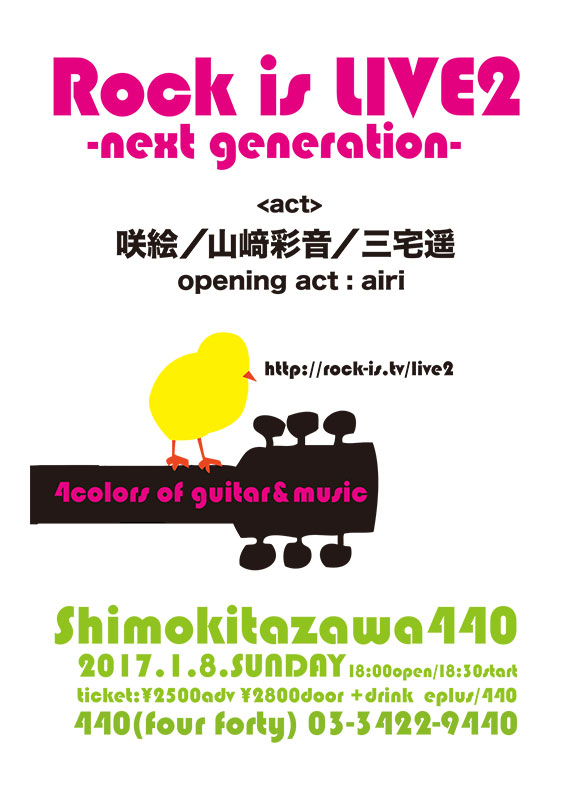
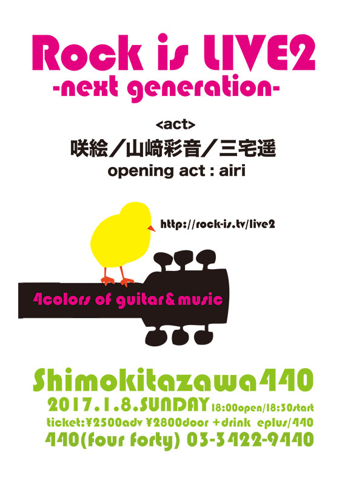

Pick up
「Rock is LIVE 2」出演決定！！
ウェブメディアRock isと音楽誌DONUT、ライブハウスがタッグを組んで主催するライブイベント「Rock is LIVE」 その第２弾に咲絵の出演が決定！！(しかもトリ…！)
詳しくはこちら！▷
ウェブメディアRock isと音楽誌DONUT、ライブハウスがタッグを組んで主催するライブイベント「Rock is LIVE」 その第２弾に咲絵の出演が決定！！(しかもトリ…！)
詳しくはこちら！▷
2017年1月より、毎月第4水曜日に神田錦町テラススクエア2Fのフードコートにて開催されることが決定したフリーライブイベント、『THE WORDS TOWN WEDNESDAY』。
第一回の出演者は、主催のフォーライフミュージックエンターテイメントと咲絵による共同ブッキング。咲絵からは、彼女と同じく1996年生まれ、新成人のシンガー二人の出演が決定した。
一人目は、温かく包み込むような歌声にどこか淋しさを纏う、タグチハナ
二人目は、ヒトの奥底を深く突き刺して離さぬ異才。1/23解禁となる。
"Next Standard"
時としてメロディーは心をほどいてくれる。
いつも君のとなりにいるシンガーソングライターは、
いつしか君の歌になり、君だけの声になる。
今夜ここで聴いたメロディーは
少しだけ先のスタンダードになる。
君はその時、何をしているだろう? いま読んでいる本やこれから手に取る一冊が、
いま聴いているCDやこれから出会う一枚が、
世界をキラキラさせてくれるだろう。
BIG WEDNESDAY GOOD SONGは水曜日にやってくる。
【公演名】 THE WORDS TOWN WEDNESDAY
♯1 ~Next Standard~
【日程】 2017年1月25日(水)
【場所】 テラステーブル(神田錦町テラススクエア2F) 東京都千代田区神田錦町三丁目22番地 http://terrace-square.jp/access.html
【開場/開演】18:00 open 18:30 start
【出演】 咲絵/村上紗由里/タグチハナ/山﨑彩音 …and More!
【料金】入場無料(出入り自由)
※会場がフードコートの為、ご飲食をオーダーお願い致 します。ゆったりした空間で、おいしいフードを楽しみながら、自由にご覧頂けます。
【主催】 フォーライフミュージックエンタテイメント
詳しくはこちら！▷